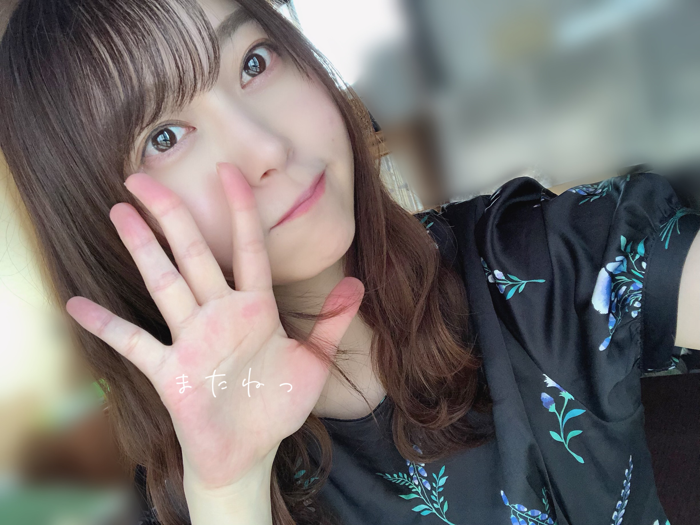
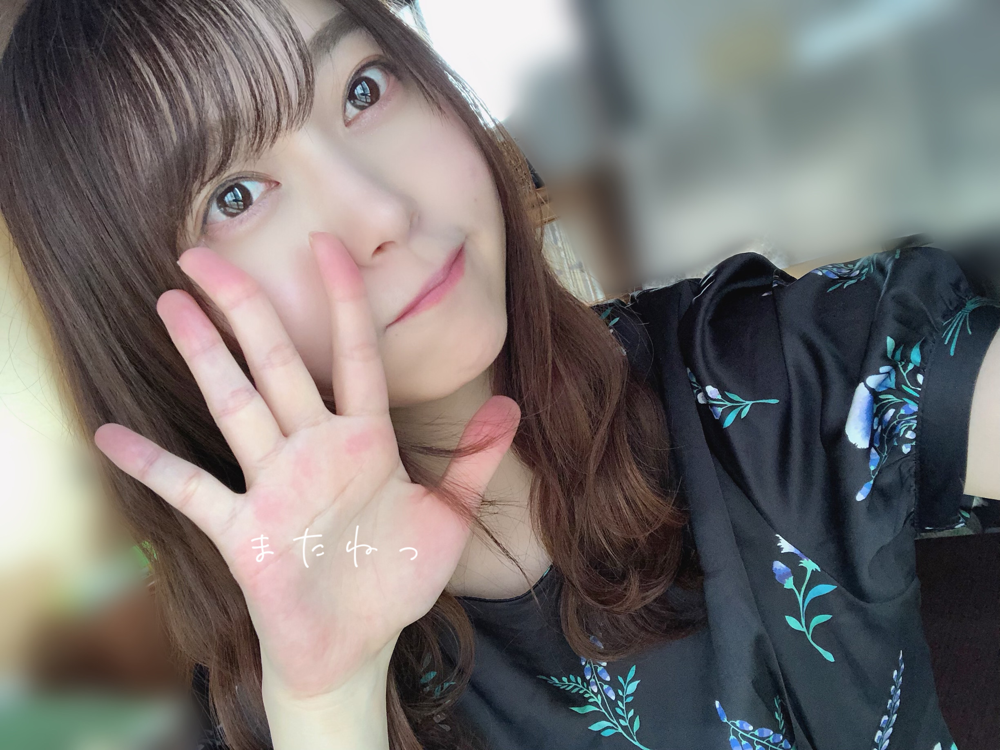

2020/0531Sun何があっても、ポトフは美味しい☺︎弓木奈於
こんにちは！
ページをクリックしてくださりありがとうございます
乃木坂46 新4期生
京都府出身
弓木奈於（ゆみきなお）です( '-' )ง✧

ほっぺた押しすぎっ
今日のタイトルの秘密は、
携帯のメモを整理していたら
「何があっても、ポトフは美味しい」
とだけ書いてあるメモがありました。
この日はポトフを食べたのでしょうか？
全く記憶がございません( '-' )ง✧
メモりがちっ
---------- ｷﾘｶｴ ---------
昨日、一昨日と『欅共和国2017』を拝見しました。
2日ともちゃんと、びしょ濡れになるまで手を洗いましたよ〜|•'-'•)و✧
画面から伝わってくる迫力に何度も鳥肌が立ちました。
目の奥からも力強く放たれる想いに心が引き込まれ、そして心から楽しんでいらっしゃる笑顔に何度も口角を上がらせていただきました。
思わず涙が溢れる幸せな2日間でした。
先日の乃木坂46
「真夏の全国ツアー2017 FINAL! IN TOKYO DOME」
の特別配信も見ていました！！
この日も私は椅子に座ってワクワクしておりました。
いつどの瞬間を切り取っても全てが美しくて、揺れる髪の毛までも全てがお綺麗で
瞬きがもったいなく感じました。
そして先輩方のお言葉はいつも、心に響く大切なお言葉です。
先輩方が今まで1日1日を大切に努力していらっしゃっているからこそのお言葉だと思います。
感謝の気持ちを忘れずに、
私も素敵な花びらに成長できるように頑張りたいです。

ほっぺたに、まる作りがちっ
---------- ｷﾘｶｴ ---------
❁質問のお返事をさせていただくコーナー❁
⚫︎『魚)^o^(魚』これを見て最初に思ったことはなんですか？
魚持ち（うおもち）...？
⚫︎50m走のベストタイムは何秒ですか？
7秒とかだった気がします...！( •́⍛•̀)曖昧
⚫︎リモート授業が夏休み入るまで確定したんだけど集中して受けるにはどうしたらいい？
毎日お疲れ様です☺️
私は、授業中ずっと座って見つめてると眠たくなっちゃうので
ちょこちょこ、寄り目をしていました！
寄り目すると目が復活するので！！
でも私の場合対面授業だったので、
先生に「何か悩んでることあるの？」って心配していただいて申し訳ない気持ちになった記憶がございます...。
顔が見えないリモートだと大丈夫なのかなって思いました☺︎
あ！勉強している内容を声に出すのはいかがでしょう...⁉︎
少しでもお力添え出来たら嬉しいです(;_;)
⚫︎ 弓木ちゃんが好きなお味噌汁の具はなんですか？
お茄子です！
⚫︎今までファンレターってあんまり送ったことがありません。それでもゆみっきーには送りたいなと思ってるんですけど、送っても良いでしょうか...？？
お気持ちとっても嬉しいです( ›_‹ )♡
目をまんまるにして読みたいです！！！
⚫︎ラグビーのイメージはどうですか？
全員で一致団結して暑い中や寒い中練習なさっていたり、何があっても諦めずに立ち向かっていらっしゃる姿が素敵だなって思います☺️
私もそのような人間になりたいです！
⚫︎弓木ちゃんと会えた時のために何か話題作りが欲しいのですが、何かありますか？
なんだろう！！なんでもいっぱいお話ししたいなぁ(*ˊᵕˋ*)
最近ハマっていることとか、趣味のお話とかお聞きしたいです❁
⚫︎テニスやった事ありますか？
ないです！
見てるの好きです(๑ ˊ͈ ᐞ ˋ͈ )
⚫︎ 4人兄弟の長女なんですけど、自粛中とっても大変です(-.-;)y-~~~兄弟がたくさんの奈於ちゃんは、どんな風な兄弟ですか？こんな時って、どう乗り越えますか？
毎日本当にお疲れ様です( ;_; )！
私はお家でいつも以上に話せる機会が出来たので、浅い話から深い話まで本当に色々な話をしています！最近UNOにハマっています（笑）
基本的に個々でやるべき事一人一人やっている事が多いかなって思います！
喧嘩は、プチ喧嘩が多いので大体「やめや〜！」って言うとおさまるのですが、
私も未熟者で、どちらか不完全燃焼で終わってしまった時は
後で思った事を話したりします...！
あとは、母に話します！
母が一番広い目で皆の事を考えてくれていると思うので☺️
私もどうしたらいいのか手探りで、お力になれるようなお返事が出来なくてすみません(;_;)
ご兄弟の事を大切に想っていらっしゃる姿が素敵だなって思いました✨
⚫︎ゆみきちゃんは髪の毛をオーディションの時のように短くする予定はありますか？
毎年、夏に切って冬はのばしていました！
今年はどうするだろう...
オーディションの時も知ってくださってありがとうございます( *ˊᵕˋ ) ⁾⁾
⚫︎北野日奈子さんとのエピソードはありますか？？？
『乃木坂工事中』の収録をさせていただいた時に、井上小百合さんと北野日奈子さんと縄跳びの二重跳びバトルをさせていただき、北野日奈子さんが優勝なさいました！
北野日奈子さんの笑顔が素敵で見惚れてしまいました( ⸝⸝⸝•_•⸝⸝⸝ )
井上小百合さんは、以前乃木坂46TVでにゃんこスターさんとコラボしていらっしゃるお姿を見ていて開いた口が塞がりませんでした！
二重飛びまたいつかリベンジできるように練習しています
⚫︎高山一実さんと何か会話しましたか？
「8th YEAR BIRTHDAY LIVE」の本番前にすれ違わせていただいた時に「お疲れ様です。頑張ってください！」と大変恐縮ながらご挨拶させていただいたら
本番前の本当にお忙しい中にも関わらず
「あ！お疲れ様です〜☺️ありがとう✨」
と輝く笑顔で大きな声で言ってくださって
本当に本当に本当に。心の底から有り難く嬉しくて幸せでした！
⚫︎カラスを英語で言うと？
マズいです...見当もつきません( ૦هᐤ )!
curios...？
black bird...？
ﾀﾞｯｼｭ!≡≡≡ﾍ(*--)ﾉ 調
⚫︎喜怒哀楽を表した写真！をいつかのっけて欲しいです！
急に日が照って、眩しっってなった時

喜怒哀楽どれにも当てはまりませんね...！
喜怒哀楽頑張ります٩( *˙0˙*)۶
⚫︎なおちゃんの学生時代はどんな事が楽しいと思えましたか？？？
高校一年生の時、友達と自転車登下校をしていたのですが、登下校も楽しかったですし
渡り廊下や中庭でお弁当を食べたのも楽しかったです！
部活動でも、先輩方も同学年の方も優しい方ばかりだったので、毎日楽しく過ごさせていただきました(´ ˘ `∗)
周りの友達がものすごく面白くて、優しいので、楽しかったな〜って思える学生時代でした！（有難い...）
⚫︎ひとつつっこませて！ファ♭はミだよ...！！
( ˙◊︎˙◞︎)◞︎ ！！
...負けるな、しょげるな٩(•́ι_•̀ )وハヤシルナ
⚫︎スーパー戦隊で見たことある作品ある？
はい！一番記憶に残っているのは『轟轟戦隊ボウケンジャー』ですかね...？
家族で一話も逃さずに観ていました！
⚫︎ 夫婦で名古屋ドームのバスラの前に京都観光しました。また京都行きたいです。オススメの場所教えてくださると嬉しいです。
秋頃になると、紅葉のライトアップあるのですがとっても綺麗でした！
祖母が鈴虫寺はどうかな？って教えてくれました☺︎
温かいお言葉ありがとうございます( *ˊᵕˋ ) ⁾⁾ ❁
⚫︎コメントしてたら握手会行って、名前覚えててくれることとかありますか・・・？♡
覚えましたよ〜( ｰ̀֊ｰ́ )✧
コメントとっても嬉しいです☺️ありがとうございます✨
⚫︎MVで会ったことない卒業生と共演してみてどう感じましたか？
私はずっとTVや画面、雑誌などで拝見していて先輩方のような女性になりたいって思っていたので（いるので）
偉大な先輩方とご一緒出来たことが本当に有り難く幸せです。
⚫︎課題が終わりません！応援してください！
〝課題か...大事ですよね〟
ダジャレをあげます( ˙༥˙ )
応援になってないですよね！笑
毎日お疲れ様です☺️
課題頑張ってください✨
⚫︎最近よく連絡を取るメンバーとかいますか？
あ！昨日、林瑠奈ちゃんと松尾美佑ちゃんと、
欅坂46さん 新2期生の増本綺良ちゃん、幸阪茉里乃ちゃん、
日向坂46さん 新3期生の高橋未来虹ちゃん、森本茉莉ちゃん、山口陽世ちゃん
と人狼ゲームをしました！
一回戦、私と瑠奈ちゃんが人狼だったのですがバレバレだったらしいです...笑
未来虹ちゃんが「投票入れて欲しくない人いる？」って聞いてくれた時に、
皆「はい」「私白だから入れないで」「私パン屋だから入れないでね」って言っていて
私は
〝私も何か言わないと...！でも潔白じゃないから白って言えないな...あ、嘘つかないと〟って思って
とりあえず「えー」って言ったのです。
ゲームが終わった後、ぱる（山口陽世）が
「なおちゃん、白って言えばいいんだよ。えーとか言うけん笑」
とアドバイスをくれました。プロです。
皆可愛くて、ワードセンスが本当に面白くて、いつも笑わせてもらっています( ◌´ `◌ )幸
皆さんの出来事や、体調を気遣ってくださるお言葉などいつもコメントありがとうございます☺️
初めてコメントしてくださった方もありがとうございます✨
皆さんの温かいお言葉に私は日々ウルウルです( ˊ•̥ ̯ •̥`)
質問もたくさんしてくださってありがとうございます✨
まだお答えできていない質問も次回お返事させていただきたいです( *ˊᵕˋ ) ⁾⁾ ❁
---------- ｷﾘｶｴ ---------
今日は写真をたくさん撮ってみました！
私、皆と全然写真を撮っていないことに気づきまして...
自分の写真いっぱいだと申し訳ないなって思ってたのですが、
コメントで
〝写真いっぱいのせてください☺︎〟と言ってくださったり
少しでもお会い出来ているような気持ちになっていただけたらなって思って
撮ってみました( ›_‹ )
いろいろな表情ができるように頑張らないとですっ！！
明日は黒見ちゃん| Ꙭ)وﾞ ㌧㌧
綺麗な紫陽花がとってもお似合いで
花言葉にも心がジーンと温かくなりました☺️
美祐ちゃんのなおちゃん呼び、私全然気づかなかった（笑）
なんでも、呼んでもらえるだけで嬉しいので₍₍( ´ ᵕ ` *)⁾⁾
可愛いです。
最後まで読んでくださりありがとうございました！
皆さんも
お体に気をつけて、素敵な1週間になりますように...✨

本日もありがとうございました☺️
ページをクリックしてくださりありがとうございます
乃木坂46 新4期生
京都府出身
弓木奈於（ゆみきなお）です( '-' )ง✧
ほっぺた押しすぎっ
今日のタイトルの秘密は、
携帯のメモを整理していたら
「何があっても、ポトフは美味しい」
とだけ書いてあるメモがありました。
この日はポトフを食べたのでしょうか？
全く記憶がございません( '-' )ง✧
メモりがちっ
---------- ｷﾘｶｴ ---------
昨日、一昨日と『欅共和国2017』を拝見しました。
2日ともちゃんと、びしょ濡れになるまで手を洗いましたよ〜|•'-'•)و✧
画面から伝わってくる迫力に何度も鳥肌が立ちました。
目の奥からも力強く放たれる想いに心が引き込まれ、そして心から楽しんでいらっしゃる笑顔に何度も口角を上がらせていただきました。
思わず涙が溢れる幸せな2日間でした。
先日の乃木坂46
「真夏の全国ツアー2017 FINAL! IN TOKYO DOME」
の特別配信も見ていました！！
この日も私は椅子に座ってワクワクしておりました。
いつどの瞬間を切り取っても全てが美しくて、揺れる髪の毛までも全てがお綺麗で
瞬きがもったいなく感じました。
そして先輩方のお言葉はいつも、心に響く大切なお言葉です。
先輩方が今まで1日1日を大切に努力していらっしゃっているからこそのお言葉だと思います。
感謝の気持ちを忘れずに、
私も素敵な花びらに成長できるように頑張りたいです。
ほっぺたに、まる作りがちっ
---------- ｷﾘｶｴ ---------
❁質問のお返事をさせていただくコーナー❁
⚫︎『魚)^o^(魚』これを見て最初に思ったことはなんですか？
魚持ち（うおもち）...？
⚫︎50m走のベストタイムは何秒ですか？
7秒とかだった気がします...！( •́⍛•̀)曖昧
⚫︎リモート授業が夏休み入るまで確定したんだけど集中して受けるにはどうしたらいい？
毎日お疲れ様です☺️
私は、授業中ずっと座って見つめてると眠たくなっちゃうので
ちょこちょこ、寄り目をしていました！
寄り目すると目が復活するので！！
でも私の場合対面授業だったので、
先生に「何か悩んでることあるの？」って心配していただいて申し訳ない気持ちになった記憶がございます...。
顔が見えないリモートだと大丈夫なのかなって思いました☺︎
あ！勉強している内容を声に出すのはいかがでしょう...⁉︎
少しでもお力添え出来たら嬉しいです(;_;)
⚫︎ 弓木ちゃんが好きなお味噌汁の具はなんですか？
お茄子です！
⚫︎今までファンレターってあんまり送ったことがありません。それでもゆみっきーには送りたいなと思ってるんですけど、送っても良いでしょうか...？？
お気持ちとっても嬉しいです( ›_‹ )♡
目をまんまるにして読みたいです！！！
⚫︎ラグビーのイメージはどうですか？
全員で一致団結して暑い中や寒い中練習なさっていたり、何があっても諦めずに立ち向かっていらっしゃる姿が素敵だなって思います☺️
私もそのような人間になりたいです！
⚫︎弓木ちゃんと会えた時のために何か話題作りが欲しいのですが、何かありますか？
なんだろう！！なんでもいっぱいお話ししたいなぁ(*ˊᵕˋ*)
最近ハマっていることとか、趣味のお話とかお聞きしたいです❁
⚫︎テニスやった事ありますか？
ないです！
見てるの好きです(๑ ˊ͈ ᐞ ˋ͈ )
⚫︎ 4人兄弟の長女なんですけど、自粛中とっても大変です(-.-;)y-~~~兄弟がたくさんの奈於ちゃんは、どんな風な兄弟ですか？こんな時って、どう乗り越えますか？
毎日本当にお疲れ様です( ;_; )！
私はお家でいつも以上に話せる機会が出来たので、浅い話から深い話まで本当に色々な話をしています！最近UNOにハマっています（笑）
基本的に個々でやるべき事一人一人やっている事が多いかなって思います！
喧嘩は、プチ喧嘩が多いので大体「やめや〜！」って言うとおさまるのですが、
私も未熟者で、どちらか不完全燃焼で終わってしまった時は
後で思った事を話したりします...！
あとは、母に話します！
母が一番広い目で皆の事を考えてくれていると思うので☺️
私もどうしたらいいのか手探りで、お力になれるようなお返事が出来なくてすみません(;_;)
ご兄弟の事を大切に想っていらっしゃる姿が素敵だなって思いました✨
⚫︎ゆみきちゃんは髪の毛をオーディションの時のように短くする予定はありますか？
毎年、夏に切って冬はのばしていました！
今年はどうするだろう...
オーディションの時も知ってくださってありがとうございます( *ˊᵕˋ ) ⁾⁾
⚫︎北野日奈子さんとのエピソードはありますか？？？
『乃木坂工事中』の収録をさせていただいた時に、井上小百合さんと北野日奈子さんと縄跳びの二重跳びバトルをさせていただき、北野日奈子さんが優勝なさいました！
北野日奈子さんの笑顔が素敵で見惚れてしまいました( ⸝⸝⸝•_•⸝⸝⸝ )
井上小百合さんは、以前乃木坂46TVでにゃんこスターさんとコラボしていらっしゃるお姿を見ていて開いた口が塞がりませんでした！
二重飛びまたいつかリベンジできるように練習しています
⚫︎高山一実さんと何か会話しましたか？
「8th YEAR BIRTHDAY LIVE」の本番前にすれ違わせていただいた時に「お疲れ様です。頑張ってください！」と大変恐縮ながらご挨拶させていただいたら
本番前の本当にお忙しい中にも関わらず
「あ！お疲れ様です〜☺️ありがとう✨」
と輝く笑顔で大きな声で言ってくださって
本当に本当に本当に。心の底から有り難く嬉しくて幸せでした！
⚫︎カラスを英語で言うと？
マズいです...見当もつきません( ૦هᐤ )!
curios...？
black bird...？
ﾀﾞｯｼｭ!≡≡≡ﾍ(*--)ﾉ 調
⚫︎喜怒哀楽を表した写真！をいつかのっけて欲しいです！
急に日が照って、眩しっってなった時
喜怒哀楽どれにも当てはまりませんね...！
喜怒哀楽頑張ります٩( *˙0˙*)۶
⚫︎なおちゃんの学生時代はどんな事が楽しいと思えましたか？？？
高校一年生の時、友達と自転車登下校をしていたのですが、登下校も楽しかったですし
渡り廊下や中庭でお弁当を食べたのも楽しかったです！
部活動でも、先輩方も同学年の方も優しい方ばかりだったので、毎日楽しく過ごさせていただきました(´ ˘ `∗)
周りの友達がものすごく面白くて、優しいので、楽しかったな〜って思える学生時代でした！（有難い...）
⚫︎ひとつつっこませて！ファ♭はミだよ...！！
( ˙◊︎˙◞︎)◞︎ ！！
...負けるな、しょげるな٩(•́ι_•̀ )وハヤシルナ
⚫︎スーパー戦隊で見たことある作品ある？
はい！一番記憶に残っているのは『轟轟戦隊ボウケンジャー』ですかね...？
家族で一話も逃さずに観ていました！
⚫︎ 夫婦で名古屋ドームのバスラの前に京都観光しました。また京都行きたいです。オススメの場所教えてくださると嬉しいです。
秋頃になると、紅葉のライトアップあるのですがとっても綺麗でした！
祖母が鈴虫寺はどうかな？って教えてくれました☺︎
温かいお言葉ありがとうございます( *ˊᵕˋ ) ⁾⁾ ❁
⚫︎コメントしてたら握手会行って、名前覚えててくれることとかありますか・・・？♡
覚えましたよ〜( ｰ̀֊ｰ́ )✧
コメントとっても嬉しいです☺️ありがとうございます✨
⚫︎MVで会ったことない卒業生と共演してみてどう感じましたか？
私はずっとTVや画面、雑誌などで拝見していて先輩方のような女性になりたいって思っていたので（いるので）
偉大な先輩方とご一緒出来たことが本当に有り難く幸せです。
⚫︎課題が終わりません！応援してください！
〝課題か...大事ですよね〟
ダジャレをあげます( ˙༥˙ )
応援になってないですよね！笑
毎日お疲れ様です☺️
課題頑張ってください✨
⚫︎最近よく連絡を取るメンバーとかいますか？
あ！昨日、林瑠奈ちゃんと松尾美佑ちゃんと、
欅坂46さん 新2期生の増本綺良ちゃん、幸阪茉里乃ちゃん、
日向坂46さん 新3期生の高橋未来虹ちゃん、森本茉莉ちゃん、山口陽世ちゃん
と人狼ゲームをしました！
一回戦、私と瑠奈ちゃんが人狼だったのですがバレバレだったらしいです...笑
未来虹ちゃんが「投票入れて欲しくない人いる？」って聞いてくれた時に、
皆「はい」「私白だから入れないで」「私パン屋だから入れないでね」って言っていて
私は
〝私も何か言わないと...！でも潔白じゃないから白って言えないな...あ、嘘つかないと〟って思って
とりあえず「えー」って言ったのです。
ゲームが終わった後、ぱる（山口陽世）が
「なおちゃん、白って言えばいいんだよ。えーとか言うけん笑」
とアドバイスをくれました。プロです。
皆可愛くて、ワードセンスが本当に面白くて、いつも笑わせてもらっています( ◌´ `◌ )幸
皆さんの出来事や、体調を気遣ってくださるお言葉などいつもコメントありがとうございます☺️
初めてコメントしてくださった方もありがとうございます✨
皆さんの温かいお言葉に私は日々ウルウルです( ˊ•̥ ̯ •̥`)
質問もたくさんしてくださってありがとうございます✨
まだお答えできていない質問も次回お返事させていただきたいです( *ˊᵕˋ ) ⁾⁾ ❁
---------- ｷﾘｶｴ ---------
今日は写真をたくさん撮ってみました！
私、皆と全然写真を撮っていないことに気づきまして...
自分の写真いっぱいだと申し訳ないなって思ってたのですが、
コメントで
〝写真いっぱいのせてください☺︎〟と言ってくださったり
少しでもお会い出来ているような気持ちになっていただけたらなって思って
撮ってみました( ›_‹ )
いろいろな表情ができるように頑張らないとですっ！！
明日は黒見ちゃん| Ꙭ)وﾞ ㌧㌧
綺麗な紫陽花がとってもお似合いで
花言葉にも心がジーンと温かくなりました☺️
美祐ちゃんのなおちゃん呼び、私全然気づかなかった（笑）
なんでも、呼んでもらえるだけで嬉しいので₍₍( ´ ᵕ ` *)⁾⁾
可愛いです。
最後まで読んでくださりありがとうございました！
皆さんも
お体に気をつけて、素敵な1週間になりますように...✨

本日もありがとうございました☺️
2020/05/31 12:12

PROFILE
新4期生リレー
202104
| SUN | MON | TUE | WED | THU | FRI | SAT |
|---|---|---|---|---|---|---|
| 1 | 2 | 3 | ||||
| 4 | 5 | 6 | 7 | 8 | 9 | 10 |
| 11 | 12 | 13 | 14 | 15 | 16 | 17 |
| 18 | 19 | 20 | 21 | 22 | 23 | 24 |
| 25 | 26 | 27 | 28 | 29 | 30 | |

コメント(337)
やっほー！
ひろき(Yandji)です☺️
ブログ更新ありがとー！！！
質問タイムー！！！
これだけは、誰にも負けないってことある？
また、コメントするね！
では、またねー！
ひろき(Yandji)より
「何があっても、ポトフは美味しい」
……間違いないねっ
着てる服が夏っぽい感じで素敵です！
奈於さんはどういう系の服が好きですか？
7回目のブログ更新ありがとう！
5月もいよいよ最終日やね！コロナの影響で、全然外に出れなかったけど、なんだかんだで充実したかも…笑
5月は乃木坂46の卒業生でもある桜井玲香さん、西野七瀬さん、伊藤かりんさん、2期生の山崎怜奈さん、3期生の与田祐希さんのお誕生日。
そして、5月5日〜7日の3日間に真夏の全国ツアー2017 FINAL! IN TOKYO DOME 特別配信もやったし！
Abema TVで乃木坂46時間TV 事前特別配信でメンバー全員でリモートトークしてたよね！
まあ、これらも全ておめでたいことでもあり楽しい時間であったことも色々あったけど、俺からしたらもう一つおめでたいことあるんよね〜♫
それは…。
ゆみっきーのブログ更新日の初めが5月1日で、ラストの5月31日にブログ更新出来るなんて、たまたまやとは思うけど、ほぼ奇跡に近いよね笑
こんな事もあるんやな〜(￣∀￣)
ゆみっきーのブログ毎回楽しみにしとるよ！
コメントも読んでくれてるみたいやしさ！
いつもありがとね！
6月もよろしゅうお願いします<(_ _)>
それでは今日はこの辺で！
また書きますね！
ゆみっきーLOVE♡♡
りゅうや
いいなあ〜
ブログ待ってましたー！！
いつも楽しく読んでいます(＾ω＾)
最後の写真の手のひらの「またねっ」
見つけました(/・ω・)/
さりげない気配りがいいですね(・ω・)ノ
次回のブログ更新も待ってまーす！
今日も可愛いね！
弓木ちゃんは握手会でどんな話をされたら嬉しいですか？？
僕も欅共和国見てました！この前の乃木坂の東京ドームも見たし、この期間でこうゆうのをみんなで見れるっていいよね！
どのグループのライブも最高やんな、めっちゃ楽しい！
写真たくさんありがとう！
奈於ちゃんの自撮り毎回可愛すぎて悶絶してる笑
50m走7秒って結構速いな笑
女の子やったらトップレベルじゃない？
最後に質問です！
世界中の隣人よの裏話何かあったら教えてください！
はよ会いたいわ〜
またブログ更新楽しみにしてます！
(=ﾟωﾟ)ﾉﾎﾅ､ﾏﾀ!!
ブログ更新ありがとう！
握手会できる日がきたらなおちゃんのとこ行こうかな！
だから覚えててほしい！すき！
毎回本当に楽しみにしてます！
早くライブで見てみたいな
ノーサイドゲームがめちゃくちゃ面白いから
是非見てみてください♪
それと最近勉強する気が起きないからエールを送ってほしいです！
かわいいし綺麗だし惚れてます
写真で着てるシャツかわいい～！
相変わらずお綺麗で、、
早く握手会で話してみたいな
覚えてもらえるように頑張らないと、、
ところで、もう5月最終日ですよ、
はやいなぁ
６月、あめ、、
なんか抱負ある？
健康第一かな、？
第二波がきてるから気をつけてね
喜怒哀楽楽しみだな！！
奈於ちゃんで良いよ
本当は奈於ってちゃんなしで呼びたいけどどうかな
娘とあまり歳が違わないからそう呼びたい（願望）
なかなか外に出られなくてストレス溜まってると思うけど体調に気を付けて頑張ってね〰️
早く奈於に会いたいな〰️
それではこの辺で
かっきーと同郷の マサシ⊿
丸亀製麺行ってくる
これについてどう思いますか？
自撮り可愛すぎる〜♡自撮りの角度安定してて好きです。なおちゃん50m7秒代すご！やっぱバスケやってたからかなぁ…
question
毎日日記書いたりしてるの？
なおちゃんは給食の中でなにが好きでしたか？
欅共和国同じく見てたよーーー
乃木坂46の東京ドームライブといい動画を見るとイベントに行きたい気持ちが凄く出てきてしまって、、でもどうすることも出来ない状態に葛藤する毎日です笑
その分次のイベントが楽しいものになると信じて頑張ります。
ゆみっきーのブログで毎回元気もらってます。ありがとう！
________________________________________________
乃木坂46の楽曲衣装で好きなものとか着てみたい衣装はありますか？あったら教えて欲しいです！
________________________________________________
《自分らしさを大事に》
いつ見ても可愛いですな〜
50m7秒って女の子だったら
速い方じゃない！？
運動神経良さそうだし！！
〈質問です〉
・モチベーションをあげる時は何をしますか？
（この質問、前回のブログと同じですw）
答えてくれたら嬉しいです！
今後のブログも楽しみに待ってます！
体調には気をつけてね！
応援してます！
大好きです♡
最後の写真の手の平のところに
「またねっ」の文字、見落としませんでしたよ〜（笑）
あと質問返してくれてありがとう
初めて返してもらえたから
めっちゃ嬉しいです
これからもまたいっぱいコメントするね
次の更新も待ってます
元坂道研修生のメンバーの方とのお話が聞けて嬉しいです！奈於ちゃんがぱるちゃんから人狼アドバイスを受けている姿が目に浮かびます…笑
自分も人狼ゲームがあまり得意じゃなくて、人狼になったときにテンパってしまうので気持ちわかります！46時間TVでの人狼ゲームに奈於ちゃんが参加するのかが、より楽しみになりました笑
ちなみに、元坂道研修生の間で人狼ゲームをよくやっているように見えるのですが、人狼ゲームが上手なメンバーはいるんですか？
兄弟がたくさんいるといいですよね！自分は4人兄弟の2番目なのですが、夏休みなど、時間がある時は兄弟と2時間くらい大富豪で遊んだりします！兄弟の間で流行るボードゲームとかありますよね…(自分の家だけかもしれない。)
最後に質問させてください！
・今までで1番ハマったものはありますか？あれば教えてください！
・学校の課題はすぐ終わらせる派でしたか？残っちゃう派でしたか？
奈於ちゃんのお写真がたくさん見れていつも嬉しいです。また次のブログの更新を楽しみにしています！
東京ドームの配信最高だったよね^_^
ライブ会場でゆみきちゃんかパフォーマンスしている姿を観るの楽しみにしてるね！
46時間テレビ楽しみ〜
またコメントします！
質問: 硬い八つ橋と柔らかい八つ橋どっち派ですか？？
ブログ更新ありがとう！
ポトフは全然食べてないから今度食べる〜
質問です！
ゆみっきーの好きなお寿司のネタは？
ちなみに僕はハマチ！
また更新楽しみにしてますねー！
６／１より、仕事が本格的に再スタート
です。頑張らなきゃ。
ポトフが美味しい。同意致します。
乃木坂にしても欅坂にしても、ここぞと
言う時に力を発揮してくれましたね。
積み重ねてきた活動があるからこそ、こ
の状況においても、楽しみを与えてくれ
ました。
ありがとう。
５０ｍ７秒って早くない？
さゆちゃんのエピソードありがとう。
さゆちゃんは６月１日、一人芝居配信し
ます。よかったら観てね。
なおちゃんの頬、おもちみたいだね。
俺も欅共和国と東京ドーム配信見たよ〜！
両方とも懐かしかったな、、、
それと同時にに奈於ちゃんのパフォーマンスもライブで見たくなってきた！いつか見れるの楽しみにしてるね〜
きっとそのメモを書いた日は今までで
1番美味しいポトフを食べたんだろうね～
人狼で嘘つけない奈於ちゃん可愛すぎ。笑
人狼とかあんまりしたことないな～
自分も大学前期はオンライン授業だけになったので､
ずっと家でゴロゴロしてます。
そして､奈於ちゃんのブログ更新の日を待ってます。
また､次の更新待ってます！！
男のスキンケアにオススメの美容品を教えてください！
自分も握手ぜったい行くつもりだからもしよかったら名前覚えてて欲しいなぁて思います
写真いっぱいで全部可愛くて眼福でした
質問です！ 今の自粛期間が収まって、旅行とか行ってみたいところはありますか？
また更新待ってます。
優と申します〜！
奈於ちゃんブログ更新ありがと〜う！
何があってもポトフは美味しい、、
確かにその通りやね！！
ポトフ美味しいよね〜
食べたくなってきた笑
今回は写真たくさんありがとね
ほっぺ押しすぎとほっぺにまる作りガチの写真可愛すぎる！
ほっぺにまるはたこ焼きかな？
早川の聖来ちゃんが飛んできますよ笑
そんな所で質問です！
・他の4期との仲良いエピソードとかありますか？
今回はこの辺で
お身体にお気をつけてお過ごしください
またコメントしますね〜
奈於ちゃんまたね〜ばいなら！
最後にリクエスト
・今回は色んな表情見せてくれたので、今度は色んな髪型をリクエストします！
ゆみっきーのかわいいお写真ありがたく頂戴しました。全部がかわいすぎてどうしたらいいですか？笑 ゆみっきーの写真色々集めさせてもらってるんですけども、少しずつ数が増えていくのを見てなんだか嬉しいです！これからもゆみっきーの歴史を写真として残していきたいです！！いつも笑顔にしてくれてありがとう。勝手にお姉ちゃんのように思ってるんですけど…いいですか？笑
明日から高校の授業再開です！！正直、朝起きないとあかんくなったのはしんどいけど友達に会えるのが楽しみ！でも授業のペースとかかなり早くなりそうでついていけるようにしないと。ただ今、明日に向けて課題を終わらせにかかってます。あともう少しやからゆみっきーブログからパワーもらって頑張ります！！こうやってちょっとずつ元の生活に戻れたらいいなぁ。そして安全な状態で会えるようになるのが楽しみです！握手会もライブも早く参加したい！6月は乃木坂イベントが充実してるのでとてもとても楽しみにしてます。5月も今日で終わりかぁ。最近時間が経つのが早いです。それはやっぱりゆみっきーのブログを5日間待ってるからかな？笑 来月も待ってまーす！！ではでは次のブログで。いつもありがとう。
私も結構好きかも〜？
東京ドームも欅共和国も見たよ！なんかこの状況下でなんもないからこういう機会ってすごいうれしいよね！
夢と現実の
両方を知って
落胆に慣れながら
逞しく生きるのが人生だ
泣いたっていいじゃないか？の好きな歌詞の部分で、落ち込むことがあった時は聞いたりしてるよ！
リズムとかも好きやからオススメ！
じゃまたねっ！
あっ！Σ(･ω･ﾉ)ﾉ！と言う間に(笑)( *´艸｀) 新４期生ちゃんのブログもまた１巡して、明日はくろみんだし、「５人だとあっと言う間だなぁ～」って感じているお兄ちゃんでっす(=ﾟωﾟ)ﾉ(笑)
ってか、最近は相変わらず「あっちぃ～_(:3 」∠)_ 」っていう日もあれば、「急に雨降ってきたよぉ～Σ(･ω･ﾉ)ﾉ！」っていう日もあるし、何気に僕は「雨が降ってきた？っていう時の「匂い」がなんか好きなんだなぁ～(●´ω｀●)♪アスファルトに、雨が当たって独特な匂いがあるあの瞬間。
そして、ゆみっき～も最近はブログで「ちょっと抜けてる所」を出してきたりしてるから、見ている僕としても「そこがゆみっき～の個性だなぁ～」って感じ取ったりその、はんなり～♪(*´Д｀)してる所が良い感じだねぇ～。って思えて、なんか可愛く思えて来ちゃう( *´艸｀)☆彡
そんな個性のあるゆみっき～がパイセンの「梅ちゃん」と同期の「真佑たん」と同い年だっていうのにも驚きを感じた今日この頃だよぉ～(*´▽｀*)
今日のブログ写真も、めっちゃカワイイね♪ゆみっき～のその「ほっぺまる」なんかやっちゃうと、今後握手会とかで「ほっぺまる、やってぇ～」とか言われまくっちゃうぞぉ～(笑)( *´艸｀)
そして、ゆみっき～の「花柄の洋服」。一瞬見ただけだと「チャイナ服」と勘違いしてしまった( *´艸｀)
（なんで、フツーの日なのに「チャイナ服」着ないといけないのぉ～？(笑)しかも私「チャイナ服」持ってないし～。とか思われてそう(笑)( *´艸｀)）
今のご時世、握手会とかも思うように開かれなかったり、いろいろな事が制限されちゃったり、凹む事が沢山あるかもだけど、唯一変わらないものだってあるんだぞぉ～♪それは・・・・。
「ファンと乃木メンとの間柄は、家族同然だし性別年齢関係な～しヽ(^o^)丿」
っていう事がね♪
ってか、僕もちょっと前から「とある指導者」って言っているけど、新４期生ちゃんのブログが１０回目位にその正体を明かすって約束しちゃってるから、あっという間に僕の「とある指導者」の正体もバレるんだろうなぁ～(笑)( *´艸｀) これは本当に地味な事だけど、ゆみっき～の年齢以上に現在進行形でやっていることだから、唯一の自慢にしちゃってるし、今回のリモート楽曲の「世界中の隣人よ」で大いに役立つなぁ～って思いながら、フルで１回見聞きしただけで完成させちゃった位、職業病なものだし、でもマイナーな言葉だから言うの恥ずかしい( *´艸｀)
ゆみっき～のこれからの乃木活が「緊張よりも笑顔が長続きするように」僕も見守っててあげるから、一緒に変に緊張する事無く乃木活をしていこなぁ～ヽ(^o^)丿♪
それじゃあ、次のブログもめっちゃ楽しみにしてるねぇ～ヽ(^o^)丿また５日後に会おうね♪
明日も一日！一緒にお家時間を楽しもうね♪大好きだよ♪ゆみっき～☆彡
きっとポトフが美味しかったんだろうねぇ笑
給食のポトフ好きだったなぁ
あ、いきなりの質問なんだけど、「好きな給食はなにかあった？」
教えて欲しいな〜
俺も欅共和国見てたんだ〜
ほんとパフォーマンスが圧巻ですごかったよね〜
素敵な2日間だったなぁ
もちろん東京ドームもすごかった！
あれも楽しかったな〜
今日は写真が沢山だ〜
しかもどれもかわいいし綺麗！最高かよ！
ありがとう〜
それじゃまた5日後に！
じゃあね〜
ポトフは美味しい！！とても共感ー！笑
弓木ちゃん50m走7秒とか早すぎ…( °࿁° )運動神経いいのか！！びっくりです( °࿁° )
私も昨日一昨日の欅共和国見ました！
アイドルの儚さをしみじみと感じたよ…“アイドルは推せる時に推せ”ですね。
これはドーム配信の時にも言えることか！あの時の愛に溢れた乃木坂の雰囲気、あれこそ乃木坂の良いところだよね！とてもとても大好きな公演です。( ˘͈ ᵕ ˘͈ )
みんなで人狼楽しそう！
私もこのコロナ期間学校の子と深夜に人狼をやることがあったんだけど、電話越しだから表情も見れないので難しい…(>_<)ただ楽しいよね！
46時間ＴＶでも人狼あるよね！弓木ちゃんはお姉さんメンバーだから参加ありえるよね〜とっても楽しみだ( ˶˙ᵕ˙˶ )
弓木ちゃんの自撮りとっても好きです〜もっともっと見たい！からたくさん写真のせてね( ⁎ᵕᴗᵕ⁎ )
ななこより
ポトフはたしかに……メモりたくなる(笑)
だって美味しいもんね……わかるべそのお気持ち……
私も欅坂の共和国見てたー!私1日目に入りやした!!
すごく覚えている事は当時応援してた長濱ねるちゃんから狙い打ち水鉄砲受けたことかな……
もうね、ねるちゃんから水鉄砲受けた時、ミルクボーイさんみたいな感じに
『あ〜〜ありがとうございます。今、長濱ねるちゃんから水鉄砲をくらいました〜、こんなんなんぼあっても良いですからねー』
って、なっちゃったよね(笑)
まあー私の話はこの辺までにして、早く乃木坂さんのライブに入りてーだ………
本当毎回ブログ書いてくれてありがとうね!早く弓木ちゃんにもご挨拶したいな……
それではまたっ!!
コミより
コメントする